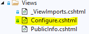

How to write a widget for nopCommerce
To extend nopCommerce functionality, widgets are used. There are various types of widgets like NivoSlider and Google Analytics which are already contained in the nopCommerce's repo. nopCommerce marketplace already contains various widgets (both free and paid) which may meet your requirement(s). If you have not found one, then you are at the right place because this article will guide you through the process of creating a widget according to your need.
The widget structure, required files, and locations
Start by creating a new Class Library project in the solution. It is recommended to place your widget in the Plugins directory, located in the root folder of the source, where other widgets and plugins already reside.
Note
Do not get confused this directory with the one which exists in Presentation\Nop.Web directory. The Plugins directory in the Nop.Web directory contains the plugin's compiled files.
A recommended name for a widget project is
Nop.Plugin.Widgets.{Name}.{Name}is your widget name (for example, "GoogleAnalytics"). For example, Google Analytics widget has the following name:Nop.Plugin.Widgets.GoogleAnalytics. But please note that it's not a requirement. And you can choose any name for a widget. For example, "MyFirstNopWidget". The Plugins directory structure of a solution looks like the following.
Once the widget project is created, the .csproj file content should be updated using any available text editor application. Replace the content with the following one:
<Project Sdk="Microsoft.NET.Sdk"> <PropertyGroup> <TargetFramework>net7.0</TargetFramework> <Copyright>SOME_COPYRIGHT</Copyright> <Company>YOUR_COMPANY</Company> <Authors>SOME_AUTHORS</Authors> <PackageLicenseUrl>PACKAGE_LICENSE_URL</PackageLicenseUrl> <PackageProjectUrl>PACKAGE_PROJECT_URL</PackageProjectUrl> <RepositoryUrl>REPOSITORY_URL</RepositoryUrl> <RepositoryType>Git</RepositoryType> <OutputPath>..\..\Presentation\Nop.Web\Plugins\WIDGET_OUTPUT_DIRECTORY</OutputPath> <OutDir>$(OutputPath)</OutDir> <!--Set this parameter to true to get the dlls copied from the NuGet cache to the output of your project. You need to set this parameter to true if your plugin has a nuget package to ensure that the dlls copied from the NuGet cache to the output of your project--> <CopyLocalLockFileAssemblies>true</CopyLocalLockFileAssemblies> </PropertyGroup> <ItemGroup> <ProjectReference Include="..\..\Presentation\Nop.Web.Framework\Nop.Web.Framework.csproj" /> <ClearPluginAssemblies Include="$(MSBuildProjectDirectory)\..\..\Build\ClearPluginAssemblies.csproj" /> </ItemGroup> <!-- This target execute after "Build" target --> <Target Name="NopTarget" AfterTargets="Build"> <!-- Delete unnecessary libraries from plugins path --> <MSBuild Projects="@(ClearPluginAssemblies)" Properties="PluginPath=$(MSBuildProjectDirectory)\ $(OutDir)" Targets="NopClear" /> </Target> </Project>Note
The WIDGET_OUTPUT_DIRECTORY should be replace by the plugin name, for example Widgets.GoogleAnalytics.
After updating the .csproj file, the plugin.json file should be added which is required for a widget. This file contains meta-information describing your widget. Just copy this file from any other existing plugin/widget and modify it for your needs. For information about the
plugin.jsonfile, please see plugin.json file.The last required step is to create a class which implements BasePlugin (Nop.Core.Plugins namespace) and IWidgetPlugin interface (Nop.Services.Cms namespace). IWidgetPlugin allows you to create widgets. Widgets are rendered on some parts of your site. For example, it can be a live chat block on the bottom right of your site.
Handling requests. Controllers, models, and views
Now you can see the widget by going to Admin area → Configuration → Local Plugins.
When a plugin/widget is installed, you will see the Uninstall button. For performance improvement, it is a good practice that you uninstall plugins/widgets which are not necessary.
There will be the Install and Delete buttons when a plugin/widget is not installed or uninstalled. Deleting will remove physical files from the server.
But as you guessed our widget does nothing. It does not even have a user interface for its configuration. Let's create a page to configure the widget.
What we need to do now is create a controller, a model, a view, and a view component.
- MVC controllers are responsible for responding to requests made against an ASP.NET MVC website. Each browser request is mapped to a particular controller.
- A view contains the HTML markup and content that is sent to the browser. A view is the equivalent of a page when working with an ASP.NET MVC application.
- A view component that implements NopViewComponent which contains logic and codes to render a view.
- The MVC model contains all of your application logic that is not contained in a view or a controller.
So let's start:
Create the model. Add a
Modelsfolder in the new widget, and then add a new model class that fits your need.Create the view. Add a
Viewsfolder in the new widget, and then add acshtmlfile namedConfigure.cshtml. Set "Build Action" property of the view file is set to "Content", and the "Copy to Output Directory" property is set to "Copy always". Note that the configuration page should use the "_ConfigurePlugin" layout.@{ Layout = "_ConfigurePlugin"; }Also make sure that you have _ViewImports.cshtml file into your
Viewsdirectory. You can just copy it from any other existing plugin or widget.
Create the controller. Add a
Controllersfolder in the new widget, and then add a new controller class. A good practice is to name plugin controllersWidgets{Name}Controller.cs. For example, WidgetsGoogleAnalyticsController. Of course, it's not a requirement to name controllers this way, but just a recommendation. Then create an appropriate action method for the configuration page (in the admin area). Let's name itConfigure. Prepare a model class and pass it to the following view using a physical view path:~/Plugins/{PluginOutputDirectory}/Views/Configure.cshtml.public async Task<IActionResult> Configure() { if (!await _permissionService.AuthorizeAsync(StandardPermissionProvider.ManageWidgets)) return AccessDeniedView(); //load settings for a chosen store scope var storeScope = await _storeContext.GetActiveStoreScopeConfigurationAsync(); var myWidgetSettings = await _settingService.LoadSettingAsync<MyWidgetSettings>(storeScope); var model = new ConfigurationModel { // configuration model settings here }; if (storeScope > 0) { // override settings here based on store scope } return View("~/Plugins/Widgets.MyFirstNopWidget/Views/Configure.cshtml", model); }Use the following attributes for your action method:
[AutoValidateAntiforgeryToken] [AuthorizeAdmin] //confirms access to the admin panel [Area(AreaNames.Admin)] //specifies the area containing a controller or action [AdminAntiForgery] //Helps prevent malicious scripts from submitting forged page requests.For example, open the
GoogleAnalyticswidget and look at its implementation ofWidgetsGoogleAnalyticsController. Then for each widget that has a configuration page, you should specify a configuration URL. Base class named BasePlugin hasGetConfigurationPageUrlmethod which returns a configuration URL:public override string GetConfigurationPageUrl() { return $"{_webHelper.GetStoreLocation()}Admin/{CONTROLLER_NAME}/{ACTION_NAME}"; }Where
{CONTROLLER_NAME}is the name of your controller and{ACTION_NAME}is the name of the action (usually it's "Configure"). Each widget should specify a list of widget zones. A base class named IWidgetPlugin has theGetWidgetZonesmethod which returns a list of widget zones where it will be rendered.public Task<IList<string>> GetWidgetZonesAsync() { return Task.FromResult<IList<string>>(new List<string> {PublicWidgetZones.HeadHtmlTag }); }You can find a list of public widget zones from this link and admin widget zones following this link. In addition to
GetWidgetZonesAsync, IWidgetPlugin hasGetWidgetViewComponentNamemethod which returns ViewComponent name. It accepts "widgetZone" name as parameter and can be used to render different view based on the selected widget zone.public string GetWidgetViewComponentName(string widgetZone) { return "MyFirstWidget"; }
Project structure of Google Analytics widget
Handling "InstallAsync" and "UninstallAsync" methods
This step is optional. Some widgets can require additional logic during their installation. For example, a widget can insert new locale resources or settings values. So open your IWidgetPlugin implementation (in most cases it'll be derived from BasePlugin class) and override the following methods:
InstallAsync. This method will be invoked during plugin installation. You can initialize any settings here, insert new locale resources, or create some new database tables (if required).
public override async Task InstallAsync() { // custom logic like adding settings, locale resources, and database table(s) here await base.InstallAsync(); }UninstallAsync. This method will be invoked during plugin uninstallation. You can remove previously initialized settings, locale resources, or database tables by widget during installation.
public override async Task UninstallAsync() { // custom logic like removing settings, locale resources, and database table(s) which was created during widget installation await base.UninstallAsync(); }Important
If you override one of these methods, do not hide its base implementation - base.InstallAsync() and base.UninstallAsync() which has been marked in the above images.